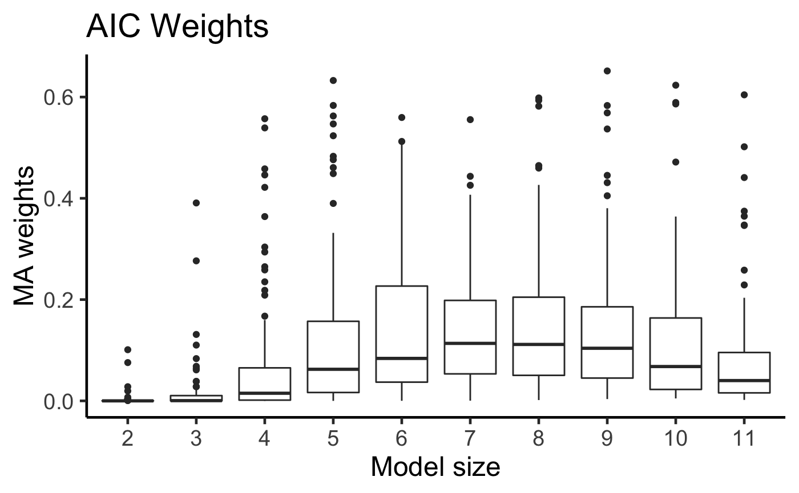
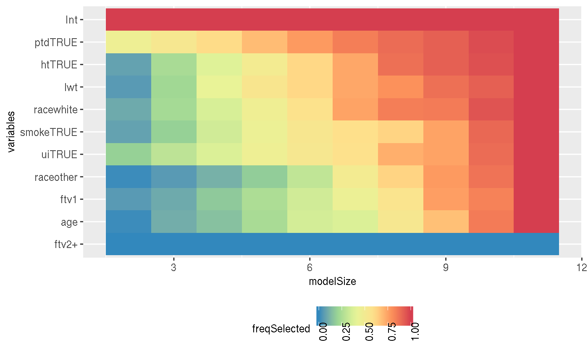
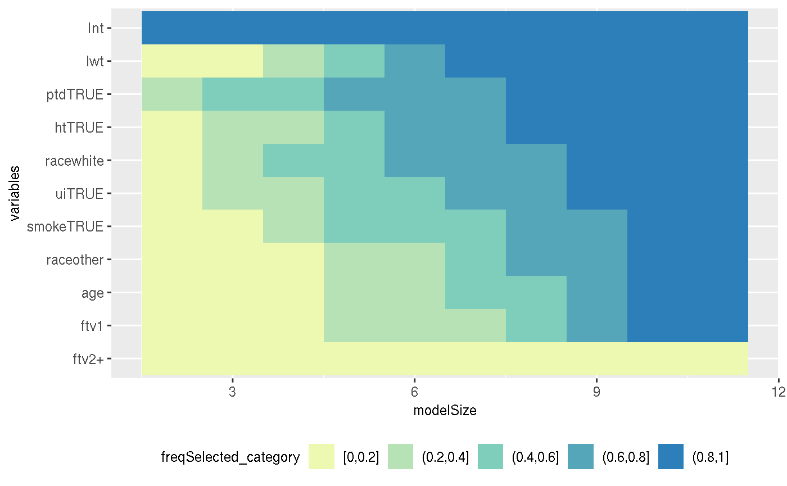

vignettes/birthweight_example.Rmd
birthweight_example.Rmdlibrary(APES)## Warning: replacing previous import 'magrittr::set_names' by
## 'purrr::set_names' when loading 'APES'library(MASS)
library(tidyverse)## ── Attaching packages ────────────────────────────────────────────────────────────────────────────────── tidyverse 1.2.1 ──## ✔ ggplot2 3.0.0 ✔ purrr 0.2.5
## ✔ tibble 1.4.2 ✔ dplyr 0.7.6
## ✔ tidyr 0.8.1 ✔ stringr 1.3.1
## ✔ readr 1.1.1 ✔ forcats 0.3.0## ── Conflicts ───────────────────────────────────────────────────────────────────────────────────── tidyverse_conflicts() ──
## ✖ dplyr::filter() masks stats::filter()
## ✖ dplyr::lag() masks stats::lag()
## ✖ dplyr::select() masks MASS::select()library(mplot)
library(directlabels)data("birthwt", package = "MASS")
bwt <- with(birthwt, {
race <- factor(race, labels = c("white", "black", "other"))
ptd <- factor(ptl > 0)
ftv <- factor(ftv)
levels(ftv)[-(1:2)] <- "2+"
data.frame(low = factor(low), age, lwt, race, smoke = (smoke > 0), ptd, ht = (ht > 0), ui = (ui > 0), ftv)
})
# options(contrasts = c("contr.treatment", "contr.poly"))fullModel <- glm(low ~ ., family = binomial, data = bwt)
round(summary(fullModel)$coef, 2)## Estimate Std. Error z value Pr(>|z|)
## (Intercept) 0.82 1.24 0.66 0.51
## age -0.04 0.04 -0.96 0.34
## lwt -0.02 0.01 -2.21 0.03
## raceblack 1.19 0.54 2.22 0.03
## raceother 0.74 0.46 1.60 0.11
## smokeTRUE 0.76 0.43 1.78 0.08
## ptdTRUE 1.34 0.48 2.80 0.01
## htTRUE 1.91 0.72 2.65 0.01
## uiTRUE 0.68 0.46 1.46 0.14
## ftv1 -0.44 0.48 -0.91 0.36
## ftv2+ 0.18 0.46 0.39 0.69bwt = mutate_if(bwt, is.factor, as.character)
x = model.matrix(~0 + . - low, data = bwt)[,-3]
dim(x)## [1] 189 10y = as.integer(as.character(bwt$low))
length(y)## [1] 189apes_logit_leaps = apes_logit(
x = x,
y = y,
Pi = fullModel$fitted.values,
k = ncol(x),
estimator = "leaps")## [1] "Finished solving linear regression approximation"apes_logit_mio = apes_logit(
x = x,
y = y,
Pi = fullModel$fitted.values,
k = 1:ncol(x),
estimator = "mio")## 0. Computing max eigenvalue of X^T X, for the step size in projected gradient descent.
## 1. Solving best subset selection with k=1.
## a. Performing projected gradient runs: 1 ... 10 ... 20 ... 30 ... 40 ... 50 ...
## b. Running Gurobi's mixed integer program solver ... Return status: OPTIMAL.
## 2. Solving best subset selection with k=2.
## a. Performing projected gradient runs: 1 ... 10 ... 20 ... 30 ... 40 ... 50 ...
## b. Running Gurobi's mixed integer program solver ... Return status: OPTIMAL.
## 3. Solving best subset selection with k=3.
## a. Performing projected gradient runs: 1 ... 10 ... 20 ... 30 ... 40 ... 50 ...
## b. Running Gurobi's mixed integer program solver ... Return status: OPTIMAL.
## 4. Solving best subset selection with k=4.
## a. Performing projected gradient runs: 1 ... 10 ... 20 ... 30 ... 40 ... 50 ...
## b. Running Gurobi's mixed integer program solver ... Return status: OPTIMAL.
## 5. Solving best subset selection with k=5.
## a. Performing projected gradient runs: 1 ... 10 ... 20 ... 30 ... 40 ... 50 ...
## b. Running Gurobi's mixed integer program solver ... Return status: OPTIMAL.
## 6. Solving best subset selection with k=6.
## a. Performing projected gradient runs: 1 ... 10 ... 20 ... 30 ... 40 ... 50 ...
## b. Running Gurobi's mixed integer program solver ... Return status: OPTIMAL.
## 7. Solving best subset selection with k=7.
## a. Performing projected gradient runs: 1 ... 10 ... 20 ... 30 ... 40 ... 50 ...
## b. Running Gurobi's mixed integer program solver ... Return status: OPTIMAL.
## 8. Solving best subset selection with k=8.
## a. Performing projected gradient runs: 1 ... 10 ... 20 ... 30 ... 40 ... 50 ...
## b. Running Gurobi's mixed integer program solver ... Return status: OPTIMAL.
## 9. Solving best subset selection with k=9.
## a. Performing projected gradient runs: 1 ... 10 ... 20 ... 30 ... 40 ... 50 ...
## b. Running Gurobi's mixed integer program solver ... Return status: OPTIMAL.
## 10. Solving best subset selection with k=10.
## a. Performing projected gradient runs: 1 ... 10 ... 20 ... 30 ... 40 ... 50 ...
## b. Running Gurobi's mixed integer program solver ... Return status: OPTIMAL.apes_logit_mio$selectedModelBeta## apesMinAic apesMinBic
## Int 0.88290811 -0.9238524
## age 0.00000000 0.0000000
## lwt -0.01530725 0.0000000
## raceother 0.00000000 0.0000000
## racewhite -1.00258564 -1.0519130
## smokeTRUE 0.92977045 0.9406584
## ptdTRUE 1.22166874 1.2815529
## htTRUE 1.76309446 0.0000000
## uiTRUE 0.00000000 0.0000000
## ftv1 0.00000000 0.0000000
## ftv2+ 0.00000000 0.0000000lasso_logit = glmnet::cv.glmnet(x = x,
y = y)
lasso_logit_coef = coef(lasso_logit, s = "lambda.min")
rownames(lasso_logit_coef)[as.matrix(lasso_logit_coef != 0)]## [1] "(Intercept)" "age" "lwt" "racewhite" "smokeTRUE"
## [6] "ptdTRUE" "htTRUE" "uiTRUE" "ftv1"apes_logit_leaps$apesTimeDiff## Time difference of 1.956622e-05 minsapes_logit_mio$apesTimeDiff## Time difference of 0.01944698 minslistResult = APES::boot_apes_logit(
x = x,
y = y,
Pi = fullModel$fitted.values,
k = 1:ncol(x),
estimator = "leaps",
nBoot = 100)APES::viPlot_apes(listResult)## $bootVarPlotdf
## # A tibble: 1,155 x 3
## penalty variables bootSelectProb
## <dbl> <chr> <dbl>
## 1 0 Int 1
## 2 0 age 0.94
## 3 0 lwt 1
## 4 0 raceother 0.93
## 5 0 racewhite 0.99
## 6 0 smokeTRUE 0.95
## 7 0 ptdTRUE 1
## 8 0 htTRUE 0.99
## 9 0 uiTRUE 0.93
## 10 0 ftv1 0.87
## # ... with 1,145 more rows
##
## $viPlot
APES::viTilePlot_apes(listResult)## $apesMleBetaBinaryPlotdf
## # A tibble: 110 x 5
## variables modelName freqSelected modelSize freqSelected_category
## <fct> <fct> <dbl> <int> <fct>
## 1 Int apesModel_2 1 2 (0.8,1]
## 2 Int apesModel_3 1 3 (0.8,1]
## 3 Int apesModel_4 1 4 (0.8,1]
## 4 Int apesModel_5 1 5 (0.8,1]
## 5 Int apesModel_6 1 6 (0.8,1]
## 6 Int apesModel_7 1 7 (0.8,1]
## 7 Int apesModel_8 1 8 (0.8,1]
## 8 Int apesModel_9 1 9 (0.8,1]
## 9 Int apesModel_10 1 10 (0.8,1]
## 10 Int apesModel_11 1 11 (0.8,1]
## # ... with 100 more rows
##
## $variableTilePlot
##
## $variableTilePlot_category
sessionInfo()## R version 3.5.1 (2018-07-02)
## Platform: x86_64-apple-darwin15.6.0 (64-bit)
## Running under: macOS High Sierra 10.13.4
##
## Matrix products: default
## BLAS: /Library/Frameworks/R.framework/Versions/3.5/Resources/lib/libRblas.0.dylib
## LAPACK: /Library/Frameworks/R.framework/Versions/3.5/Resources/lib/libRlapack.dylib
##
## locale:
## [1] C
##
## attached base packages:
## [1] stats graphics grDevices utils datasets methods base
##
## other attached packages:
## [1] gurobi_8.0-1 slam_0.1-43
## [3] Matrix_1.2-14 bindrcpp_0.2.2
## [5] directlabels_2018.05.22 mplot_1.0.1
## [7] forcats_0.3.0 stringr_1.3.1
## [9] dplyr_0.7.6 purrr_0.2.5
## [11] readr_1.1.1 tidyr_0.8.1
## [13] tibble_1.4.2 ggplot2_3.0.0
## [15] tidyverse_1.2.1 MASS_7.3-50
## [17] APES_0.3.7
##
## loaded via a namespace (and not attached):
## [1] nlme_3.1-137 fs_1.2.6 lubridate_1.7.4
## [4] RColorBrewer_1.1-2 httr_1.3.1 rprojroot_1.3-2
## [7] tools_3.5.1 backports_1.1.2 doRNG_1.7.1
## [10] utf8_1.1.4 R6_2.3.0 lazyeval_0.2.1
## [13] colorspace_1.3-2 withr_2.1.2 tidyselect_0.2.4
## [16] bestsubset_1.0.6 compiler_3.5.1 glmnet_2.0-16
## [19] cli_1.0.1 rvest_0.3.2 xml2_1.2.0
## [22] desc_1.2.0 pkgmaker_0.27 labeling_0.3
## [25] scales_1.0.0 quadprog_1.5-5 pkgdown_1.1.0.9000
## [28] commonmark_1.6 digest_0.6.17 rmarkdown_1.10.12
## [31] pkgconfig_2.0.2 htmltools_0.3.6 bibtex_0.4.2
## [34] rlang_0.2.2 readxl_1.1.0 htmldeps_0.1.1
## [37] rstudioapi_0.8 shiny_1.1.0 bindr_0.1.1
## [40] jsonlite_1.5 gtools_3.8.1 magrittr_1.5
## [43] leaps_3.0 Rcpp_0.12.19 munsell_0.5.0
## [46] fansi_0.3.0 stringi_1.2.4 yaml_2.2.0
## [49] plyr_1.8.4 grid_3.5.1 parallel_3.5.1
## [52] promises_1.0.1 shinydashboard_0.7.0 crayon_1.3.4
## [55] lattice_0.20-35 haven_1.1.2 hms_0.4.2
## [58] knitr_1.20 pillar_1.3.0 rngtools_1.3.1
## [61] reshape2_1.4.3 codetools_0.2-15 glue_1.3.0
## [64] evaluate_0.11 modelr_0.1.2 httpuv_1.4.5
## [67] foreach_1.4.4 cellranger_1.1.0 gtable_0.2.0
## [70] assertthat_0.2.0 mime_0.5 xtable_1.8-3
## [73] broom_0.5.0 roxygen2_6.1.0 later_0.7.5
## [76] iterators_1.0.10 registry_0.5 memoise_1.1.0